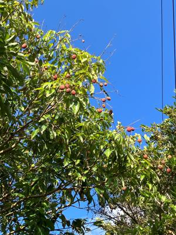
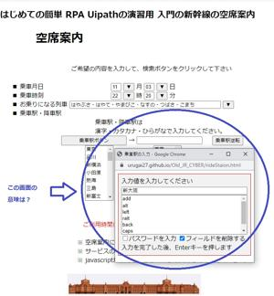

うるがいの話 ある日
最新: 古い新幹線の空席案内【うるがいの話 ある日】とは 一日だけのプログです
『うるがいの話』の最新一日だけのプログで、通信料が少なく経済的だ。カニの画像をクリックすると全ての日付が載る『うるがいの話』サイトを表示します
|
|
【うるがいの話】 うるがい(ｳﾙｶﾞｲ urugai)とは、『もずくがに』の名前でとても大きくなります。 |
|---|---|
|
|
【カミマヤーの話】 猫のことを方言でマヤーといいます。カミマヤー（kamimayaa）とは、神の猫のことです。 |
|
【たながぁの音楽】 たながぁ（ﾀﾅｶﾞｰ tanagaa）とは手長えびのことで、何種類かあり大きいのは車 エビぐらいになります。 |

|
【ぶながぁの話】 ぶながぁ(ﾌﾞﾅｶﾞｰ bunagaa)とは、赤い髪の毛、赤い身体、そして身長は１ｍ２０ｃｍ ぐらい、川の蟹を食べているの目撃された。場所は沖縄県国頭郡大宜味村のと ある村僕の隣近所に住んでいる爺さんから、聞いた話です。 |
|
|
【ギーマの話】 ギーマ(giima)とは、山原の里山に咲くスズランに似た、 花を付けます。実は食べられます、 気が付くと口の周りが紫になっています。 |
2023年06月07日 (水）古い新幹線の空席案内
15:41

プログを作成しただけでは、検索サイトに現れないのである。日々サイトを更
新し、かつ、検索サイトからプログのタイトルで検索をかけ、検索された一覧
からサイトへ遷移するということを頑張って操作しないとダメなのである。マ
さくらである。操作を面倒くさいので、ＲＰＡでロボットに自動検索させる仕
組みをＵｉＰａｔｈのソフトを使って作った。次の動画は、Ｇｏｏｇｌｅの検
索を自動化したものを録画した例である。 Ｇｏｏｇｌｅの検索
実用はこれだけだが、これを作成するときに参考にした専門書（図書館にない
自腹で買った）をせっかくなので、学習することにした。ところがである、最
初の『操作をレコーディングしてワークフローを作成』のセッションを実際に
ＵｉＰａｔｈのソフトで本を見ながら、操作すると本に載っていたウエブの『
新幹線の空席案内』がリニューアルされていた。なんということだ、２０２０
２月発行日の本なのに！、ちなみ『新幹線の空席案内』は
２０２０年９月１７日
同サイトは、ＪＲ各社の指定席の空席案内、新幹線運転状況の提供などを行っ
ている。９月１７日までにサイトが更新され、スマートフォンでも操作がしや
すいデザインに変更した。
しかたないので自分で本を参考に 旧検索サイト（本の操作向けに） を作った

旧システムは２０００年に作られたようだ。その当時と言えば、画面は８００
×６００、ネット環境も悪かったしなと旧システムを作った。ただ、訳の分か
らないテキスト入力のダイアログ画面があった。いろいろ調べたが、分からな
かった。作った旧検索サイト（本の操作向けに）で実際に本の説明通りにＵｉ
Ｐａｔｈで操作していたら、意味不明のテキスト入力のダイアログ画面は、Ｕ
ｉＰａｔｈがロボットを作るときに出しているダイアログだったことが分かっ
た。おえ、なんということだ・・・・。ただ、このダイアログってなに？と疑
問がわいたがネットでは調べられず、そんなこんなで暇なので、オーソドック
スに、そのソフトが提供している無料のアカデミーを受講している訳である。
１５時３０分 ビットコインの総資産 ￥１０、８６８（↑３９３）